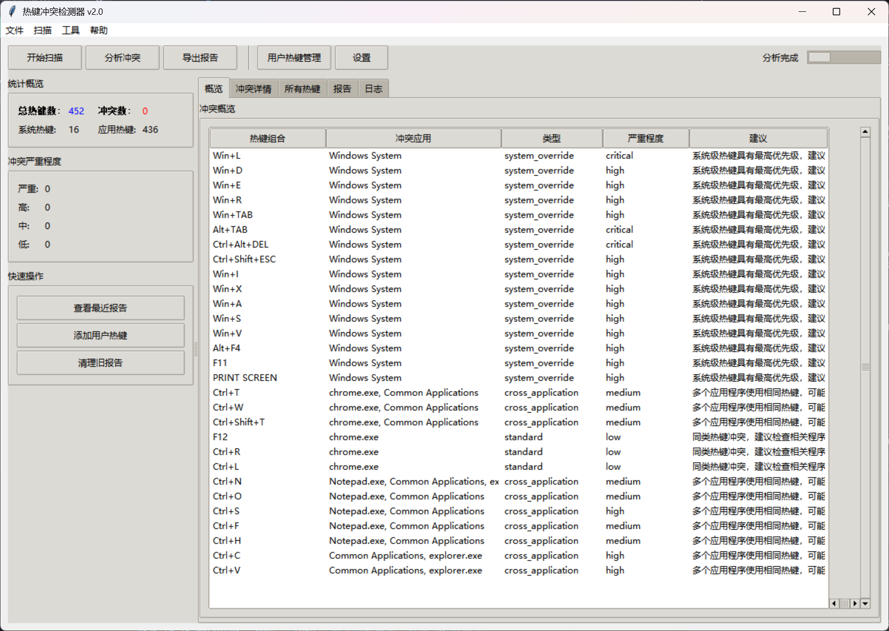

多源热键扫描
系统级热键、应用程序全局热键、注册表配置、当前活动窗口快捷键与用户自定义热键，统一进入同一张表。
- 虚拟键码解析与修饰键标准化
- 进程信息关联，定位到具体 exe
一次扫描，看清系统级、应用程序、注册表与活动窗口里全部热键。 Hotdog 用多维度评分找出真正的冲突，并直接告诉你怎么改。

从检测到归因，再到可执行的修复建议，全流程覆盖。
系统级热键、应用程序全局热键、注册表配置、当前活动窗口快捷键与用户自定义热键，统一进入同一张表。
源类型优先级、应用重要性与既有严重程度共同参与打分，自动判定 system_override、cross_application 与 standard 三类冲突。
每条冲突都附带归因说明与替代组合键推荐，告诉你该改哪个程序、换成什么更安全。
完整的增删改查与格式校验，支持搜索过滤、导入导出与操作历史，个人热键同样参与冲突分析。
JSON 供程序消费，CSV 直接拖进 Excel 透视，TXT 适合贴进工单或聊天窗口。
General、Detection、Alerts、Export、Advanced 五大配置节，INI 文件可读可改，附带校验与自动修复。
扫描 → 分析 → 处理 → 归档，界面里始终在同一个窗口完成。
点击工具栏「开始扫描」，枚举系统热键、运行进程注册的全局热键、注册表项与当前窗口快捷键。
实时进度 · 日志可查评分引擎对同一组合键的多个持有者排序，输出冲突类型、严重程度与一句人话解释。
critical / high / medium / low「概览」「冲突详情」「所有热键」三个标签页交叉对照，双击行查看完整冲突信息。
搜索实时过滤按需导出 JSON / CSV / TXT，或在「用户热键管理」里登记自己的组合键，避免下次误配。
报告目录自动管理只用 Python 标准库 GUI + 两个 Windows 依赖，无需编译，克隆下来即可运行。建议以管理员身份启动，系统级热键检测更完整。
# 1. 克隆仓库
git clone https://github.com/456wyc/hotdog.git
cd hotdog
# 2. 双击 安装依赖.bat（自动创建 .venv 并装依赖）
# 3. 双击 启动程序.bat# 1. 创建并激活虚拟环境
python -m venv .venv
.venv\Scripts\activate
# 2. 安装依赖并启动
pip install -r requirements.txt
python main.py程序会自动创建 config/、data/、reports/、logs/ 运行时目录。
数据模型统一出入，检测、分析、配置与导出彼此解耦，便于继续扩展。
enhanced_hotkey_detector.py多源热键采集hotkey_conflict_detector.py原版检测器（兼容保留）smart_conflict_analyzer.py评分、分类与建议hotkey_data_models.pyHotkey / Conflict / Reportenhanced_gui.pytkinter + ttk 主界面hotkey_conflict_detector_v2.py控制器与流程编排config_manager.pyINI 配置与校验user_hotkey_manager.py用户热键持久化report_exporter.pyJSON / CSV / TXT执行 pip install pywin32 psutil，或直接双击 安装依赖.bat。安装后重新启动程序即可。
部分系统级热键（如 Ctrl+Alt+Del 相关组合、Win 键系统保留项）只有管理员权限才能枚举。右键以管理员身份运行后再扫描。
正常。检测需要遍历进程、读取注册表并查询活动窗口，机器上运行的程序越多耗时越长，可在「日志」标签页观察进度。
优先保留系统级与高重要性应用的绑定，修改评分较低的一方；直接采用报告中给出的替代组合键，或调整应用内的快捷键前缀。
登记你正在使用的组合键后，它们会参与冲突分析。这样在新增工具或调整配置时，能提前发现与个人习惯的冲突。